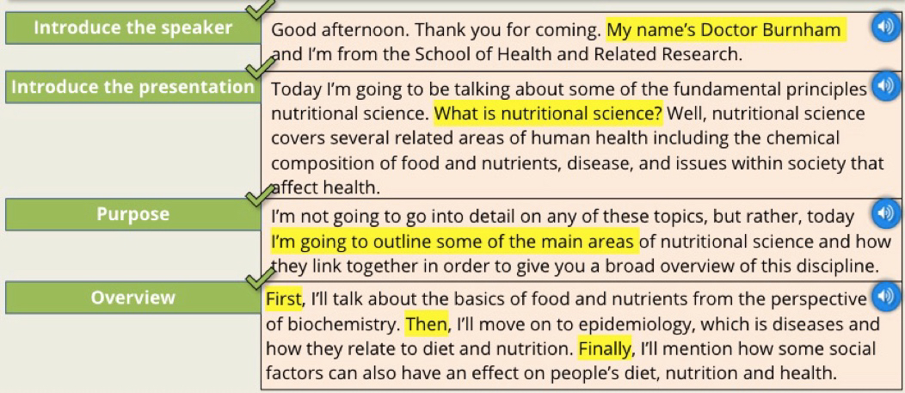

Presensation Stages¶
Overview¶
Stage 1: Introduce the speaker
The speaker greets the audience, introduces him and states the overall purpose.
Stage 2: Introduce the presentation
The speaker tells the audience what he intend to talk about, i.e. listening the different sections of the presentation.
Stage 3: Main body
The speaker talks about the presentation topic in detail.
Stage 4: Conclusion"
The speaker lets the audience know that he is going to finish the presentation.
Stage 5: Question / Discussion"
The speaker gives the audience the opportunity to ask question.
Example:

Stage 1: Introduce the speaker¶
- Greet the audience
- Introduce yourself
- Introduce the presentation topics
Example:
-
Good morning my name's […] and today I'm going to be talking about nuclear energy.
-
Hello every. If you don't know me, my name's […] and my presentation is about marketing strategies.
-
Hello, I'd like to begin by introducing my self. I'm […] and today I'm going to tell you about climate change.
Stage 2: Introduce the presentation¶
- Define key terms
- Give an overview of the presentation
Example:
-
I'll begin by giving a definition of the concept of ...
-
Then, I'll go on talk about the different parts of ...
-
In the next section, I'll aim to describe the ...
-
And finally, I'll finish off with some recommendations and suggestions for further research on ...
Tip
Important: Help the audience to understand the structure.